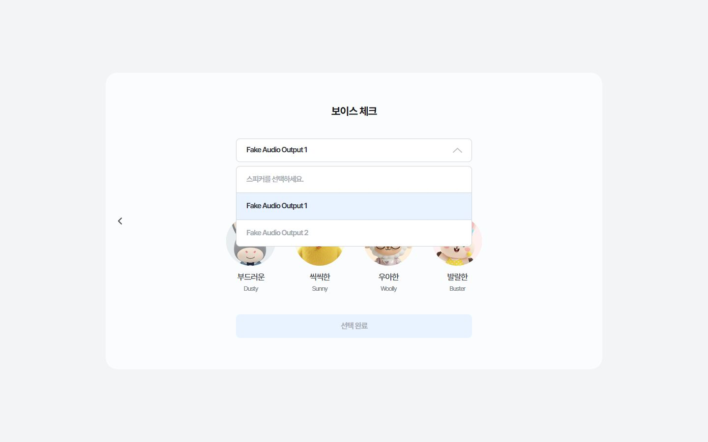
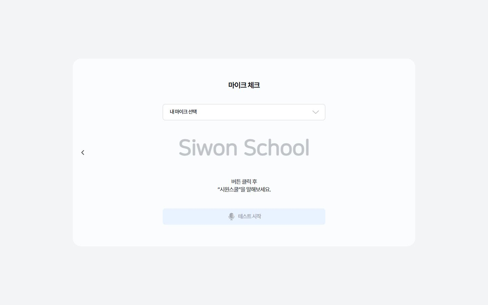
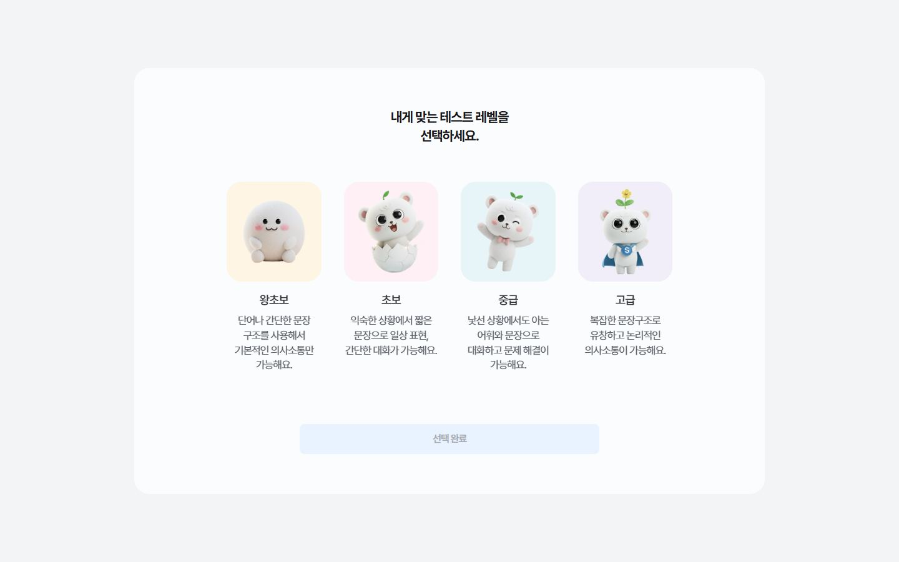
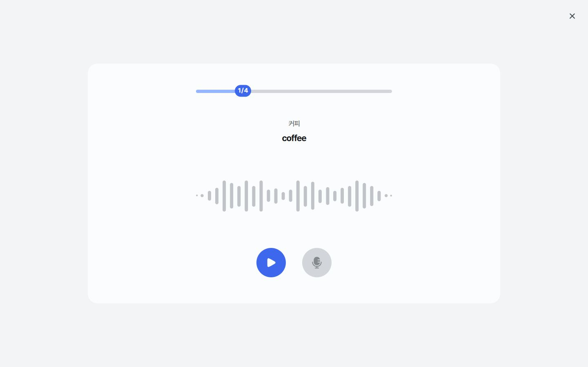
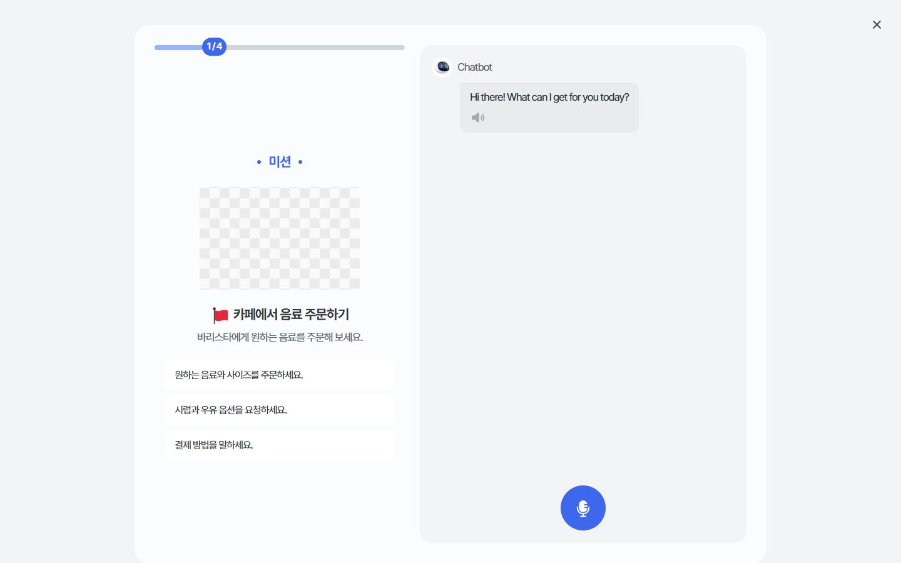
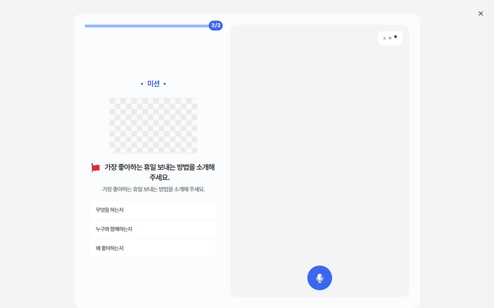
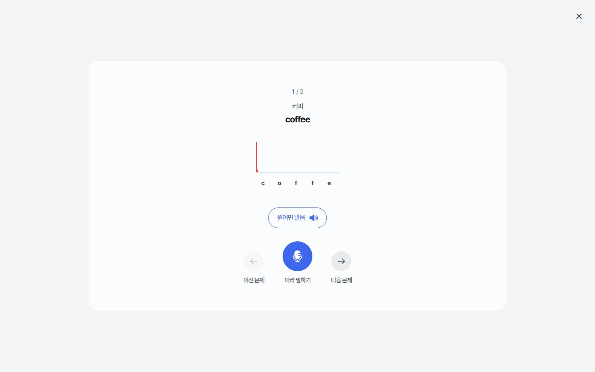
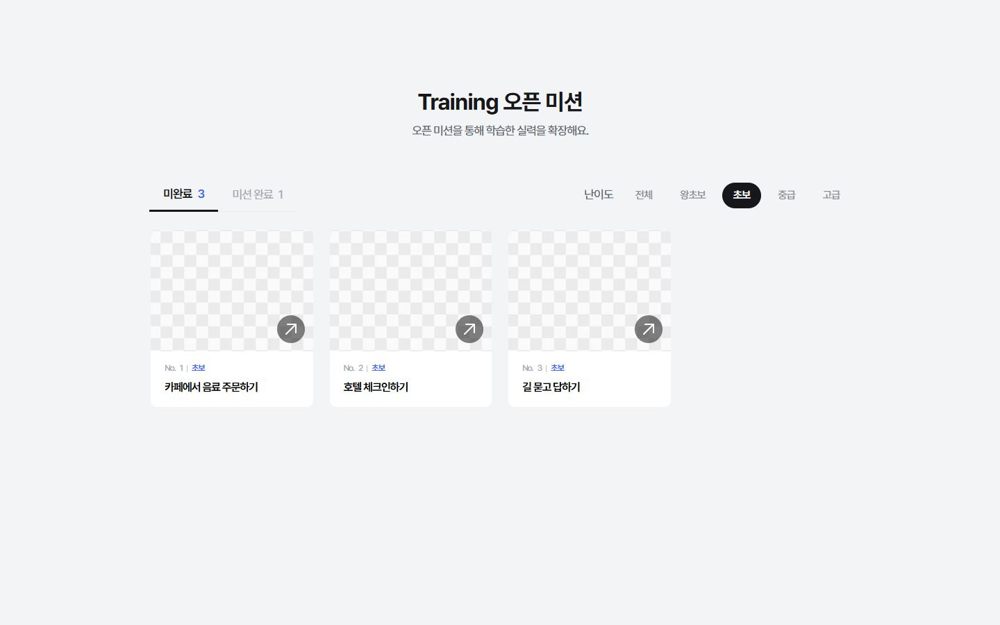
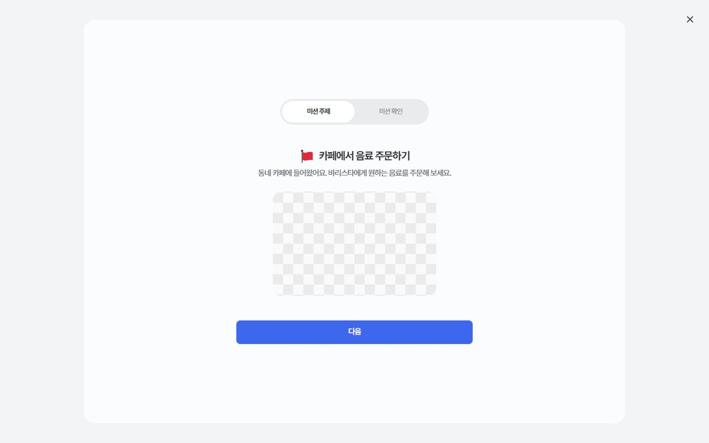
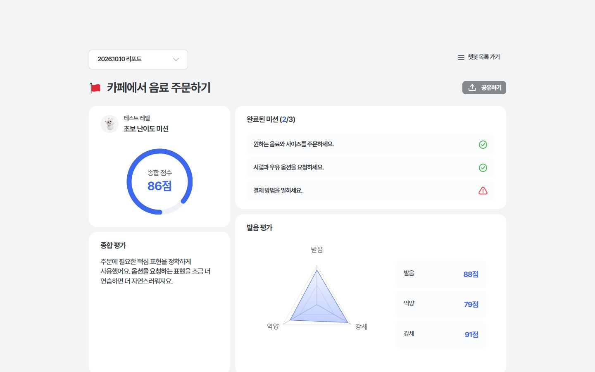

Web App · 에듀템 × 시원스쿨
AI와 영어로 말하는
웹앱을 퍼블리싱했습니다
시원스쿨 AI 스피킹 챗봇은 설치 없이 브라우저에서 앱처럼 쓰는 웹앱입니다. 학습자가 미션을 받고, AI 캐릭터와 음성으로 대화하고, 발음과 문법 리포트를 받습니다. 마이크 녹음과 음성 파형, 모바일 전체 화면 레이아웃까지 사운드 체크부터 공유용 리포트에 이르는 전 화면의 HTML·CSS 퍼블리싱과 인터랙션을 맡았습니다.
대면 면접 시 실제 화면을 직접 조작하며 더 자세히 보여드릴 수 있습니다.
원하는 음료와 사이즈를 정확하게 주문하기
User Flow
학습자가 지나가는 다섯 단계
음성 학습은 마이크가 켜져 있어야 시작됩니다. 장비 확인부터 공유 리포트까지 실제 순서대로 화면을 나누고, 단계마다 CSS를 분리해 유지보수 범위를 좁혔습니다.
시스템 체크
스피커·마이크 확인. 음성 파형과 녹음 상태 애니메이션.
레벨 선택
왕초보~고급 4단계 카드 선택 화면.
레벨테스트
Part 1~3 말하기 문항. 제한 시간과 자동 제출 안내.
챗봇 트레이닝
미션 주제·확인·완료 슬라이드와 AI 대화창, 실시간 피드백.
리포트 · 공유
종합 점수, 발음·억양·강세, AI 추천 표현. 공유용 페이지와 OG 이미지.
Web App
설치 없이, 브라우저에서 앱처럼
앱 마켓 설치 없이 링크 하나로 바로 학습을 시작합니다. 대신 마이크·오디오·화면 높이처럼 네이티브 앱이 당연하게 처리하던 부분을 웹 표준 API와 CSS로 직접 맞췄습니다.
브라우저 마이크 녹음
마이크 권한을 요청하고 학습자의 답변을 바로 녹음해 채점 서버로 보냅니다. 권한이 거부됐을 때의 안내도 넣었습니다.
getUserMedia · MediaRecorder실시간 음성 파형
입력 볼륨을 분석해 파형 막대로 보여주어, 지금 소리가 들어가고 있는지 학습자가 바로 확인할 수 있습니다.
AudioContext · AnalyserNode모바일 전체 화면 레이아웃
모바일 주소창이 나타났다 사라져도 녹음 버튼과 대화창이 화면 밖으로 밀리지 않도록 높이를 동적 뷰포트 단위로 잡았습니다.
100dvh · --vh 변수세로가 짧은 화면 대응
폭 분기에 더해 높이 분기를 따로 두어, 노트북이나 가로 모드 휴대폰에서도 핵심 버튼이 한 화면 안에 들어옵니다.
@media (max-height)앱 전환 시 시간 처리
레벨테스트 도중 다른 앱이나 탭으로 넘어가면 학습 시간 측정을 멈추고, 돌아오면 이어서 측정합니다.
visibilitychange앱 같은 화면 마감
대화 화면은 모바일 상태 표시줄 색을 배경과 맞추고, 미션 안내는 Swiper 스와이프로 넘겨 손가락 조작에 맞췄습니다.
theme-color · Swiper 11System Check
시스템 체크
학습을 시작하기 전에 스피커와 마이크가 제대로 동작하는지 확인합니다.

스피커 출력을 확인하고, 대화할 AI 캐릭터의 목소리를 미리 들어보며 고릅니다.

입력 볼륨을 파형으로 보여주고, 녹음 상태에 따라 애니메이션이 바뀝니다.
Level Test
레벨테스트
Part 1~3이 제한 시간·녹음 버튼·자동 제출 안내를 공유하고, 문항 형식만 파트별로 다르게 구성했습니다.

왕초보~고급 4단계 카드. PC에서는 4열, 태블릿 이하에서는 2열로 재배치됩니다.

단어와 문장을 듣고 따라 말합니다. 녹음 중에는 링과 파형 애니메이션이 함께 돕니다.

AI의 질문에 음성으로 답하는 대화형 문항. 제한 시간이 지나면 자동 제출됩니다.

제시된 그림을 보고 준비 시간 뒤에 자유롭게 발표합니다.

8개 영역 레이더 차트와 영역별 코멘트. 같은 구조로 공유용 리포트 페이지도 만들었습니다.
Training
워밍업 · 챗봇 트레이닝
발음 워밍업으로 입을 풀고, 미션을 골라 AI 캐릭터와 대화한 뒤 리포트를 받습니다.

단어·문장을 읽으면 음소별 발음 점수를 색으로 구분해 보여줍니다.

레벨별 필터와 완료 상태 표시. 오픈 미션과 강의 미션 목록이 같은 컴포넌트를 씁니다.

미션 주제·확인·완료 슬라이드와 AI 대화창. 답할 때마다 정답·오답 피드백이 말풍선 안에 붙습니다.

강의 내용을 바탕으로 자유롭게 대화하는 미션. 인텐트 챗봇과 대화창 구조를 공유합니다.

종합 점수, 발음·억양·강세, AI 문법, 유창성·정확성, AI 추천 표현을 한 화면에 쌓았습니다.
Highlights
구현 포인트
시안 기준 폭 1600px의 값을 비율로 옮기고, 디자인 토큰과 상태 클래스로 화면 26개 CSS를 같은 규칙 아래 묶었습니다.
1600px 시안 기준 유동 타이포그래피
시안 값을 비율로 옮기고 최솟값·최댓값으로 묶었습니다. 예:
clamp(18px, calc(24 / 1600 * 100vw), 24px)녹음 버튼과 음성 파형
.start가 붙으면 링이 퍼지는ring키프레임과 파형 애니메이션이 동시에 돕니다. 말풍선 꼬리는clip-path삼각형입니다.미션 안내 슬라이드
Swiper로 세 단계를 넘기고 상단 탭과 하단 페이저를 동기화했습니다.
공유용 리포트
레벨테스트·트레이닝 리포트 구조를 그대로 재사용한 공유 페이지에 링크 복사 모달과 OG 이미지를 붙였습니다.
디자인 토큰을 :root에 모았습니다
색상, 내부 폭, 자간, 보더 두께를 변수로 두어 화면 26개 CSS가 같은 값을 참조합니다. 모바일 주소창 높이 문제는 100dvh를 변수로 감싸 해결했습니다.
/* common.css */ :root { --primary: #33373C; --gray50: #F4F5F6; --gray900: #1E2124; --ls: -0.02em; --inner-width: 1100px; --vh: 100dvh; }
상태는 클래스 하나로 바꿉니다
개발자가 JS에서 클래스만 토글하면 되도록 상태 셀렉터를 설계했습니다. 마크업에는 어떤 클래스를 넣을지 주석으로 남겨 협업 비용을 줄였습니다.
/* 정답·오답 피드백 */ .learning .talk .check { color: #4AC34E; } .learning .wrong .talk .check.great { display: none; } .learning .wrong .talk .check.wrong { color: #FA444D; display: flex; } <!-- 미션 완료 시 mission-complete 클래스 넣어주세요 -->